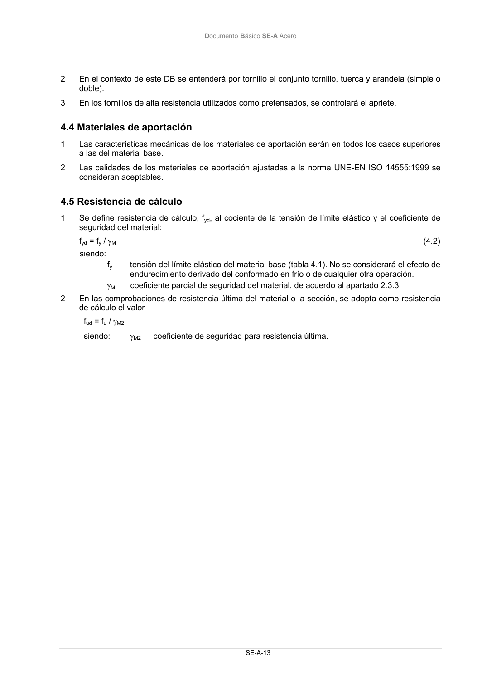

DB-SE-A Acero · edición 2007-10-23 · capa oficial
Documento DB-SE-A-oficial · SHA-256 del PDF 9ed9ea694aabfbda3bfbbef40dfe9223fde05d13c35bc2ba9751e5a96a22a64f
Página física 15 de 168.
Copia fiel del PDF fuente · Fuente oficial
Ficha de la disposición en la fuente oficial
Formato: Texto de la página (Markdown)
Documento Básico SE-A Acero SE-A-13 2 En el contexto de este DB se entenderá por tornillo el conjunto tornillo, tuerca y arandela (simple o doble). 3 En los tornillos de alta resistencia utilizados como pretensados, se controlará el apriete. 4.4 Materiales de aportación 1 Las características mecánicas de los materiales de aportación serán en todos los casos superiores a las del material base. 2 Las calidades de los materiales de aportación ajustadas a la norma UNE-EN ISO 14555:1999 se consideran aceptables. 4.5 Resistencia de cálculo 1 Se define resistencia de cálculo, fyd, al cociente de la tensión de límite elástico y el coeficiente de seguridad del material: fyd = fy / γM (4.2) siendo: fy tensión del límite elástico del material base (tabla 4.1). No se considerará el efecto de endurecimiento derivado del conformado en frío o de cualquier otra operación. γM coeficiente parcial de seguridad del material, de acuerdo al apartado 2.3.3, 2 En las comprobaciones de resistencia última del material o la sección, se adopta como resistencia de cálculo el valor fud = fu / γM2 siendo: γM2 coeficiente de seguridad para resistencia última.
